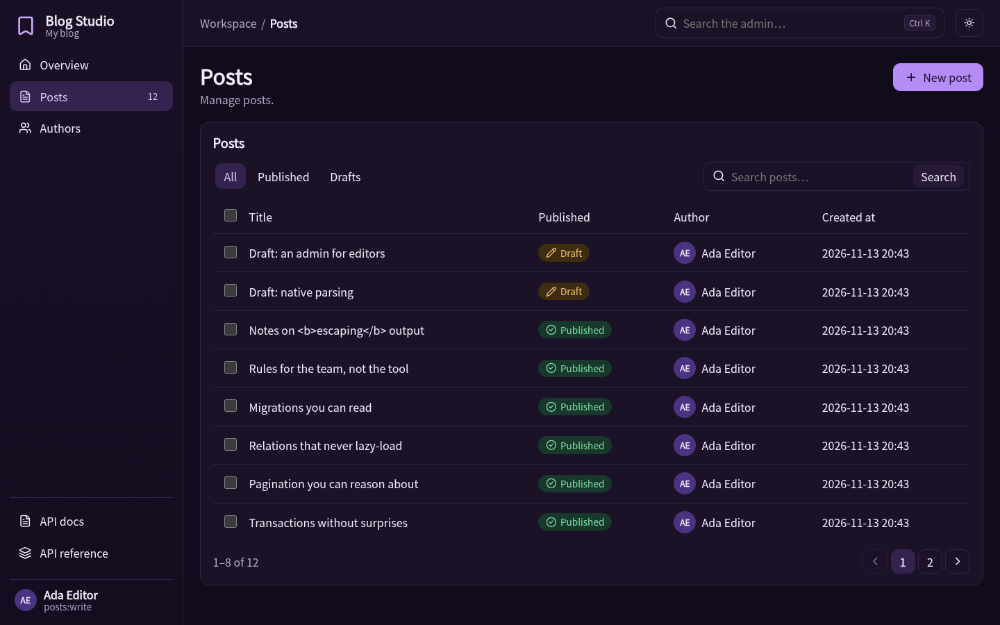
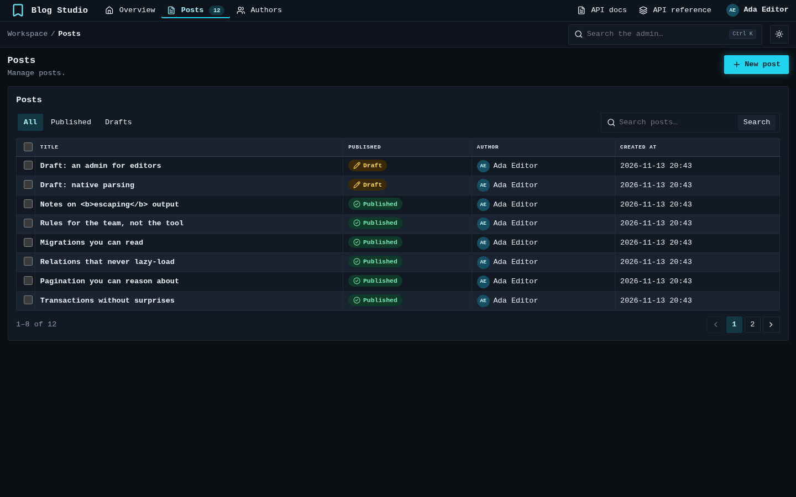
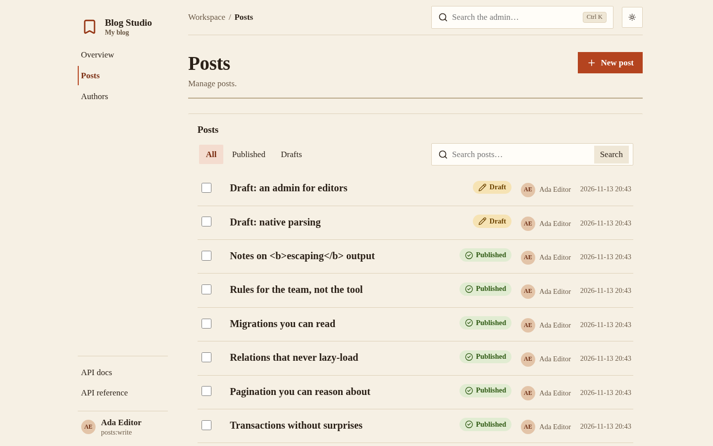

GuidesIntegrations
Customize the admin¶
A ModelAdmin states only what the model does not already say. Class attributes shape the list and the form; methods change behaviour; templates and themes change the look.
# blog/apps/blog/adminsite.py
from typing import Any
from hinoki import Caller
from hinoki.admin import Admin, ModelAdmin, Tone, action
from .models import Post
site = Admin(site="Blog Studio", per_page=8)
@site.admin(Post)
class PostAdmin(ModelAdmin[Post]):
columns = ("title", "published", "author_id", "created_at")
search = ("title", "slug")
readonly = ("created_at",)
badges = {"published": {True: ("Published", Tone.OK), False: ("Draft", Tone.WARN)}}
tabs = ("published",) # one tab per badge: Published | Draft
fieldsets = {"Organization": ("author_id", "published")}
@action(confirm="Publish the selected posts?")
async def publish(self, posts: tuple[Post, ...], principal: Caller[Any]) -> None:
await Post.filter(id__in=[p.id for p in posts]).aupdate({"published": True})
Register a model¶
@site.admin(Post) registers a ModelAdmin class for a model. site.register(...) takes a model class, which gets the default admin, or a ModelAdmin class that names its model with model=. The slug in the URL is the table name with dashes (blog-posts), or the class attribute slug = "posts".
Shape the list and the form¶
| Attribute | Effect | Default |
|---|---|---|
columns |
Columns of the list | The model's fields |
search |
Columns the search box looks in | The first three text columns the list shows |
readonly, exclude |
Shown but not editable; never shown | () |
badges |
Value → Badge(label, tone, icon) or (label, tone[, icon]) |
Plain text |
tabs |
One tab per badge of the named column | None |
fieldsets |
Fieldsets, or a dict of title → field names |
One group |
per_page, show_count |
Page size; row count in the sidebar | The site's Admin(per_page=20, show_count=False) |
bulk_delete |
Offer bulk delete where can(principal, "delete") allows |
True |
allow_hard_delete |
Offer physical deletion in the Deleted view | False |
Tone (NEUTRAL, ACCENT, OK, WARN, DANGER, INFO) is the color role of badges, stats and events. Without configuration the label and plural come from the model, the order from @db.ordered_by and the "last modified" line from its @db.timestamps() column.
Search matches a row when any search column contains the typed text, compared case-insensitively as text (a number or date matches its printed form). Naming an excluded column in search is refused at registration, because which rows match would reveal its value.
Form inputs follow the column type: text, number, checkbox, UUID, datetime, date, time (without a UTC offset), Decimal (finite values only) and Enum (a select of member names). Another type is shown read-only. A time or decimal that is retyped but means the stored value (09:30 for 09:30:00, 12.5 for 12.50) is not saved again.
Datetime fields use the app's settings.timezone (UTC without built-in settings): stored instants are shown there and edited datetime-local values are read there, then saved as UTC-aware datetimes. A time that does not exist or occurs twice during a daylight-saving change is refused for correction.
Soft-deleted models¶
For a model using @db.soft_delete() or SoftDeleteModel, the admin's Active
list and default queryset(principal) contain live rows. When tabs is unset,
the list shows Active and Deleted views; ?deleted=1 selects the latter. With custom tabs the Deleted view is a last tab after them. The
default deleted_queryset(principal) is self.model.only_deleted(). Override
it to add tenant or ownership filters; the admin always narrows it to rows with
a delete timestamp, and uses that same scope for restore and hard-delete.
The deleted_at and every tracked changed_at column are automatically
readonly unless excluded. Deleting a row uses soft deletion. Deleted rows
cannot be edited or deleted through the regular row form before restoration.
The Deleted view offers restore to users allowed to change each row. Physical
purging is hidden and refused unless the model admin opts in with
allow_hard_delete = True; each selected row must also pass can(principal,
"delete", row).
Override behaviour¶
Each method below is called by the framework; override what you need and call super() for the rest.
# blog/apps/blog/adminsite.py
from typing import Any
from hinoki import Caller
from hinoki.admin import Avatar, ModelAdmin, Refusal
from hinoki.orm import QuerySet
from .models import Post
@site.admin(Post) # the site created above
class PostAdmin(ModelAdmin[Post]):
def queryset(
self, principal: Caller[Any]
) -> QuerySet[Post]: # rows this caller sees, in every statement
return Post.filter(author_id=principal.user.id).select_related("author")
def can(
self, principal: Caller[Any], action: str, row: Post | None = None
) -> bool: # narrows a grant, never widens it
if action == "delete" and row is not None and row.published:
return False
return super().can(principal, action, row)
def display(
self, row: Post, column: str
) -> Any: # a list cell: text, a Badge or an Avatar
if column == "author_id":
return Avatar(row.author.name)
return super().display(row, column)
async def check(
self, values: dict[str, Any], principal: Caller[Any], row: Post | None
) -> dict[str, str]: # {field: message} refuses
if values.get("published") and not (values.get("title") or (row and row.title)):
return {"title": "A published post needs a title."}
return {}
async def remove(self, row: Post, principal: Caller[Any]) -> None:
if row.published:
raise Refusal("Unpublish the post first.") # shown on the page
await super().remove(row, principal)
queryset(principal)decides which rows a caller sees; counts and pages come from it.can(principal, "view", row)then trims the fetched page, so a page may hold fewer rows thanper_page.save(values, principal, row=None)andremove(row, principal)are the only places that write; run a domain operation there instead of a raw write.Refusalraised in either rolls the write back and shows its message.stats(principal)returns the dashboardStats for the model.- Mass assignment, excluded columns and out-of-scope rows are refused by the framework.
Add fields that are not columns¶
extra_fields (or an extras() method, when the choices depend on what is registered) adds form fields that are not columns:
Extra("password", "Password", "password"): a masked input, never filled in again.Extra("tags", "Tags", "choices", choices=(("a", "A"), ("b", "B"))): checkboxes; the value is afrozensetof the checked ones.
They reach check and save next to the columns, so save takes them out before writing the row; extra_initial(row) returns what the edit form shows. The Users section is built this way (hinoki.admin.users.useradmin).
Many-to-many fields¶
A model's many_to_many field appears in its add and edit forms as a multi-select named after its ids field (<field>_ids, or its ids_name) when the target model is registered with the same admin and the signed-in user may view it. The options are what that target's admin lists for the user (its queryset), at most 200, with the linked rows first. Saving replaces only the links to rows the user can see; links to rows outside that scope are kept. A key that is unknown, hidden from the user or longer than 200 characters is refused with one message (Some choices are not available.) and nothing is saved, so a hidden row cannot be told from a missing one. More than the field's max_items selections is refused the same way.
When the options are truncated the form says so; narrow them with ?link_q_<ids_name>=text on the form URL (the text is cut at 100 characters and matched against the target admin's search columns, or its primary key). A target that is not registered or not viewable leaves the field read-only: the form shows no count and ignores any posted value. A name in readonly shows the links without changing them. The row and its links are written in the request's transaction, so a refused link rolls the row back too.
Add a bulk action¶
Mark an async method with @action. The list shows the button once rows are selected:
# blog/apps/blog/adminsite.py
from typing import Any
from hinoki import Caller
from hinoki.admin import ModelAdmin, action
from .models import Post
@site.admin(Post)
class PostAdmin(ModelAdmin[Post]):
@action(confirm="Publish the selected posts?")
async def publish(self, posts: tuple[Post, ...], principal: Caller[Any]) -> None:
ids = [post.id for post in posts]
await Post.filter(id__in=ids).aupdate({"published": True})
- The action name is the method name with
_written as-; the label defaults to "Publish selected".view,add,changeanddeleteare reserved. - The name is also the permission checked by
can(principal, name, row). Every selected row is checked against the queryset andcanbefore confirmation and again before execution; one denied row refuses the whole action. - The action runs in the admin's write transaction with the selected rows locked, on at most 200 distinct rows (more answer
400). A failure rolls everything back; success redirects to the list with a notice. - Handlers still apply their own domain conditions to writes that involve related records or external state.
Replace the HTML or the stylesheet¶
Admin(templates="admin_ui") reads admin_ui/components/NAME.html before the built-in component of the same name (shell, sidebar, table, form, field, auth for the sign-in page, ...) and appends admin_ui/admin.css after the theme. Copy the built-in component from the package as a starting point; keep its {{ value }} (escaped) and {{{ raw }}} placeholders.
/* admin_ui/admin.css */
.hn-auth-card { border-radius: 0; }
.hn-nav-item[aria-current="page"] { font-weight: 800; }
Choose or build a theme¶
Four built-in styles, each with light and dark modes; the system preference picks the initial mode and the toggle overrides it. Pick one with Admin(theme="bento").
| Style | Navigation | List | Edit | Look |
|---|---|---|---|---|
| Studio (default) | Sidebar | Cards with a table | Drawer beside the list | Soft violet, rounded |
| Console | Top bar | Dense monospaced grid | Drawer | Neon cyan and teal, square |
| Paper | Quiet text index, centred column | Document rows | Own page | Serif type, terracotta |
| Bento | Icon rail (bottom tab bar on phones) | Grid of cards | Own page | Ink outlines, offset shadows, yellow accent |







A Theme is a set of --hn-* design tokens for both schemes, plus edit ("drawer", "page"), layout ("sidebar", "topbar", "index", "rail") and list_style ("table", "rows", "cards"). Start from a built-in one:
# blog/apps/blog/adminsite.py
import dataclasses
from hinoki.admin import THEMES, Admin
studio = THEMES["studio"]
forest = dataclasses.replace(
studio,
name="forest",
label="Forest",
light={**studio.light, "accent": "#1f6f50", "accent-hover": "#17543c"},
dark={**studio.dark, "accent": "#5cc79b", "accent-hover": "#7ad6b0"},
layout="topbar",
extra_css=".hn-brand-text strong { letter-spacing: .04em; }",
)
site = Admin(theme=forest)
extra_css is appended after the tokens; default_mode="dark" starts dark until the user switches. The text and surface colour pairs of the built-in themes are tested against WCAG AA contrast. Bento was checked in Chromium and Firefox at 1440, 390, 360 and 320 px; WebKit was not run.
Errors and edge cases¶
All of these fail when the Admin is created or the model registered, not on a request:
| Mistake | Error |
|---|---|
A ModelAdmin naming a different model than the one registered |
RegistrationError |
search naming an excluded column |
RegistrationError |
A bulk action named view, add, change or delete |
RegistrationError |
A template file that is not a component, an unknown placeholder, {{ }} changed to {{{ }}}, or a form, table, confirm or auth override without {{ csrf }} |
TemplateError |
| A theme with a missing token, unknown layout or bad name | ValueError from the Theme, before any page is served |